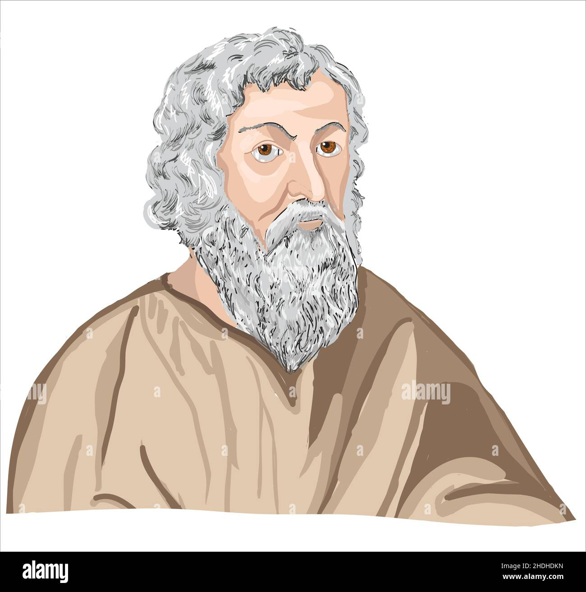

PROYECTO TRANSVERSAL
CENTRO DE ESTUDIOS DE BACHILLERATO
"LIC.JESUS REYES HEROLES"
CEB 6/13
FILOSOFIA
APORTACIÓN FILOSOFICA
ALUMNA:BRENDA MICHELLE FLORES PERALTA
GRUPO:602
N.L.17
CICLO ESCOLAR 2022-2023
SEMESTRE "B"
Filosofo Josep Muños Redón:El piensa que los transtornos alimenticios proviene por un pecado capital que es "La gula"que trae problemas de salud a nivel social ya que encontramos citas tan celebres como "El hombre es lo que come".
Filosofo Ludwig Feuerbach se cuestiona ¿Y tú eres lo que comes?
Filosofo Lucrecio poeta,filosofo Romano 99a.c-55 a.c

Hipocrates medico de la antigua Grecia460 a.c.
Volver a inicio